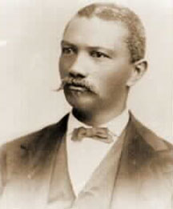

|

NAME: Alexander Augusta
BORN: 1825
DIED: 1890
ALLEGIANCE: Union
HIGHEST RANK: Brevet Lieutenant Colonel
UNIT: 7th U.S. Colored Troops
RECORD: Commissioned surgeon of colored volunteers, April 4, 1863,
with the rank of Major. Commissioned regimental surgeon of
the 7th Regiment of U.S. Colored Troops, October 2, 1863.
Brevet Lieutenant Colonel of Volunteers, March 13, 1865.
Mustered out October 13, 1866.
|
|
Alexander Augusta was born in 1825 in Norfolk,
Virginia. He was educated in Baltimore, Philadelphia,
California, and Canada, eventually receiving a medical
degree from Trinity Medical College in Toronto. After
finishing his training, he settled in Washington, D.C. and
was practicing there as a surgeon when the Civil War broke
out. When the government announced it would accept black
troops in January of 1863, he quickly volunteered, and was
appointed surgeon in the U.S. Colored Troops on April 4,
1863.
Because of his education and professional background,
Augusta was given a major's commission. He was the first
African-American to be awarded that rank, and the first of
only eight black surgeons to serve in the Civil War. Despite
his high rank, however, he was only paid enlisted-rank wages
for most of his time in the service.
Augusta began his military career by accompanying his
unit, the 7th U.S. Colored Troops, on their expedition to
Beaufort, South Carolina. Later he was in charge of an army
hospital in Savannah, Georgia. At the end of the war he was
breveted a lieutenant colonel for "meritorious and faithful
service," one of the few African-Americans to achieve field
grade rank in the Civil War. He remained in the army longer
than most other volunteers, not being mustered out until
October 13, 1866.
After leaving the army, Augusta returned to Washington,
D.C., where he became one of the first African-American
faculty members at Howard University, teaching courses on
anatomy and diagnosis. He remained a member of the school's
faculty for 10 years and before returning to private
practice.
Alexander Augusta died on December 2, 1890 at the age of
65 and was buried in Section 1 of Arlington National
Cemetery, the first black officer to be interred there. His
grave, set apart from the rows of white headstones,
identifies him as "the commissioned surgeon of colored
volunteers."
Source: Christopher Bates for the History 139A website.
|